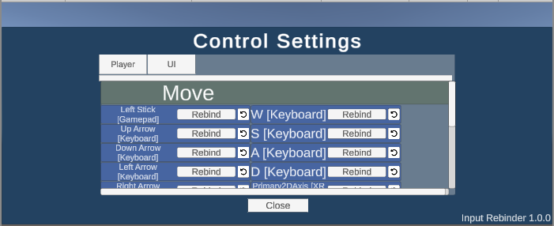

Input Rebinder
A package that generates UI for "control settings" in a Unity project. Users can use the control settings to rebind their inputs interactively.

Features
- Easy-to-use editor plugin
- Automatic generation of in-game UI
- Ready-to-use prefab, limited additional tinkering required
- Customizable generation
Getting Started
To get started, see the tutorial.